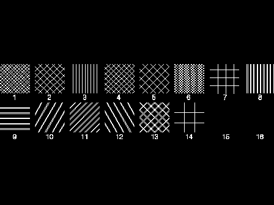

Any symbol from a raster font can be used as a pattern by the appropriate use of this function and the GpiSetPatternSet function.
If the current pattern set specifies a bit map (see GpiSetBitmapId and GpiSetPatternSet), the pattern attribute is ignored.
If lPatternSymbol is set or defaulted to PATSYM_SOLID, and the lSet parameter of GpiSetPatternSet is LCID_DEFAULT, pattern colors that are not available may be approximated by dithering (unless dithering has been disabled by setting the LCOL_PURECOLOR bit on the flOptions parameter of GpiCreateLogColorTable).
This function must not be issued in an area or path bracket.
The attribute mode (see GpiSetAttrMode) determines whether the current value of the pattern symbol is preserved. 